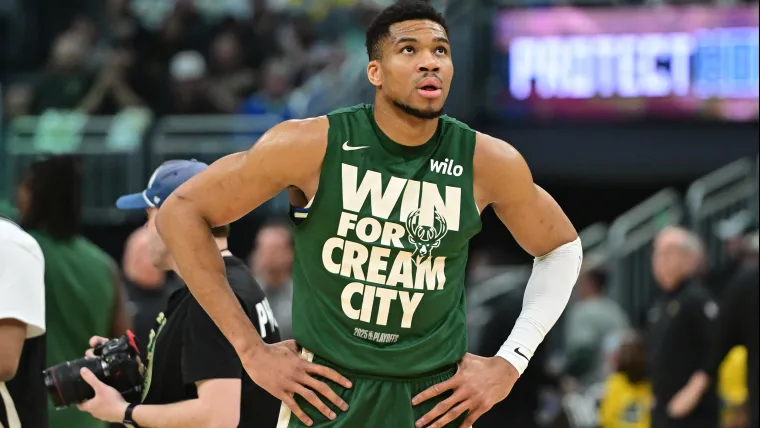

NBA
Aunque varias estrellas podrían cambiar de equipo en los próximos meses, no hay un jugador que despierte más interés alrededor de la NBA que Antetokounmpo.
El futuro de los Milwaukee Bucks ha entrado en una nebulosa y las especulaciones sobre la salida del griego se han disprado en las últimas semanas. Y ahora, suman como protagonista a un nuevo posible destino para el campeón en 2021: los Toronto Raptors.
¿Interés mutuo entre Giannis y los Raptors?
De acuerdo a un informe del Toronto Star existe "interés mutuo" entre la franquicia y el jugador para conseguir un traspaso que deje a Giannis Antetokounmpo en Canadá. Entre los argumentos que aporta el reporte, sobresale la relación personal que une a Antetokounmpo con Masai Ujiri, directivo más importante de los Raptors.
Horas antes de esta noticia, el propio Brian Windhorst, periodista de ESPN, había mencionado a Toronto como un equipo que comenzaba a pisar fuerte en el mercado, como una de las franquicias que preparaba un movimiento fuerte por un "pez gordo".
¿Qué tendrían que dar los Raptors para convencer a Milwaukee? Posiblemente a su jugador más importante, Scottie Barnes, junto a una buena cantidad de picks de Draft. Otros nombres, como Gradey Dick, RJ Barrett y/o Ochai Agbaji, también podrían sumarse a un potencial paquete, tanto por motivos deportivos como económicos.
Antes de este informe del Toronto Star, los principales rumores sobre el futuro de Giannis estaban vinculados a los equipos de New York -Nets y Knicks-, junto a los San Antonio Spurs y los Houston Rockets.
¿Sorprenderán los Raptors como en su momento hicieron con Kawhi Leonard?
Juan Estevez
Graduado de DeporTEA en 2011, Juan Estévez se sumó al equipo de NBA Global en 2019, luego de trabajar en otros sitios argentinos ligados al básquet como Pick and Roll y Básquet Plus. Desde 2022 forma parte del staff de Sporting News en español, cubriendo principalmente NBA, fútbol y NFL.